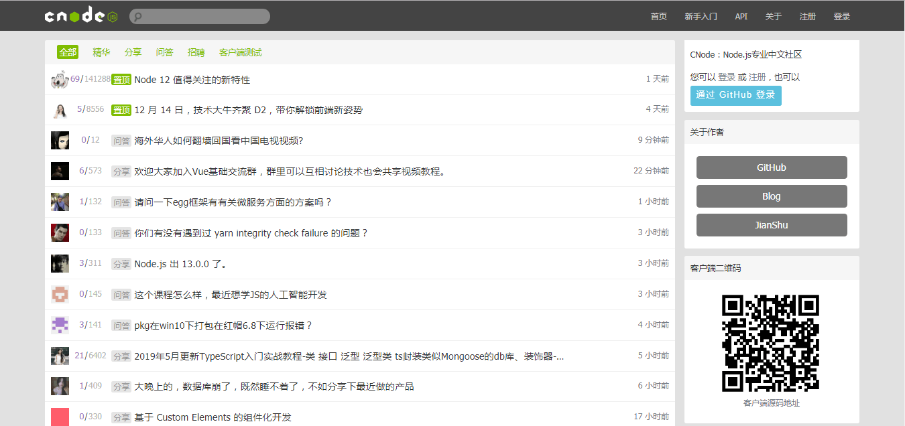
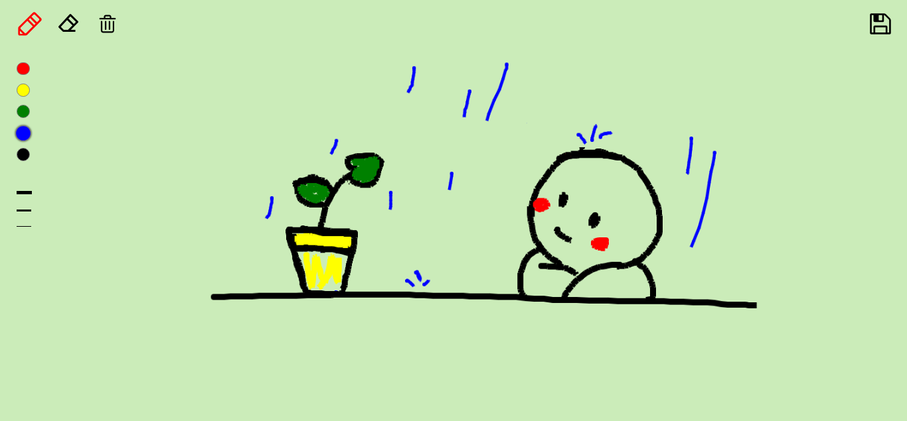
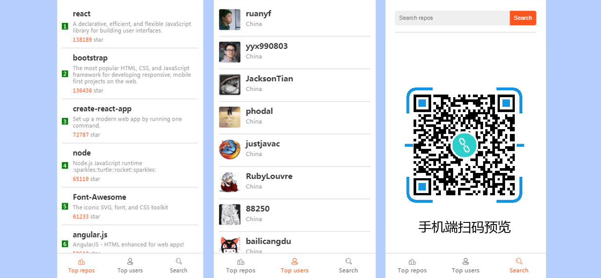
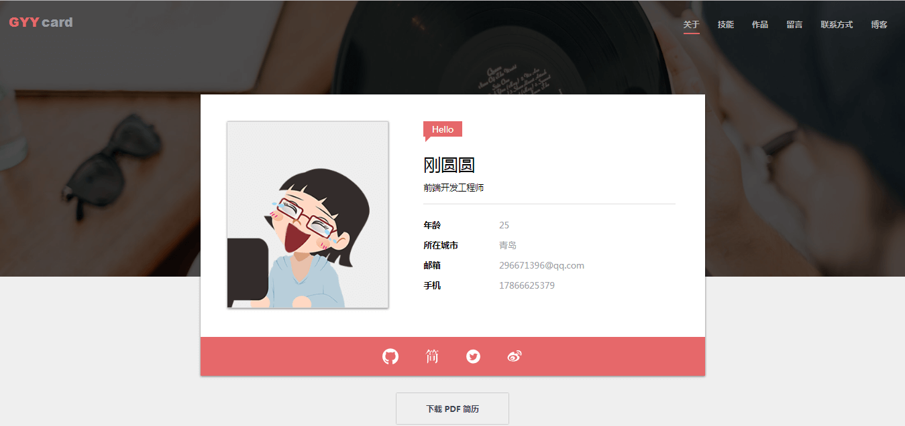
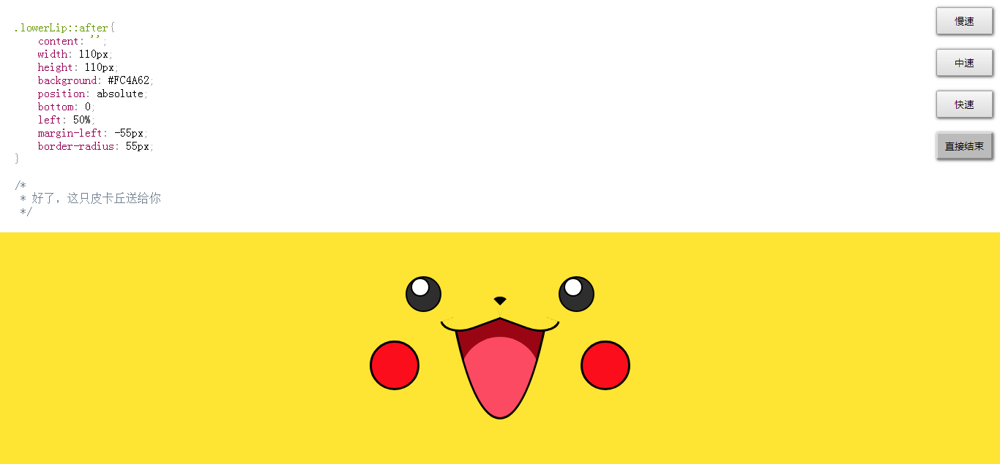
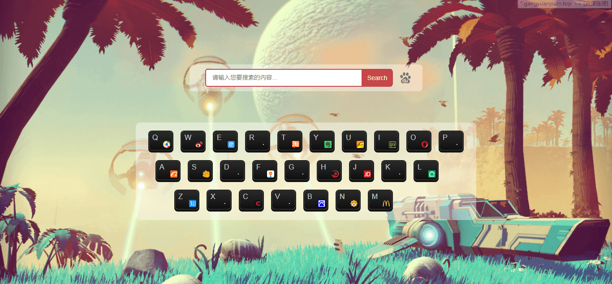

项目经历
CNode 社区
- 关键词：Vue、jQuery、Vue Router、Axios、vue-cli
- 描述：该项目使用 Vue 技术还原了 CNode 社区，该项目利用组件化开发思想，以 vue-cli创建项目模板，利用 Axios 获取数据，使用 Vue Router 进行前端路由的切换及传参，并使用 watch 监听路由的变化，避免出现懒加载无法跳转的情况。
- 源码链接：https://github.com/Gangyuanyuan/CNode
- 预览链接：https://gangyuanyuan.top/CNode/dist/index.html
Canvas 在线涂鸦
- 关键词：JavaScript、Canvas、ES6、响应式
- 描述：该项目使用原生 JS 实现，主要调用HTML 5 的 Canvas API，实现了绘画、调色、选择画笔粗细、橡皮擦、一键清空等功能，并支持将图画下载到本地。使用响应式布局，方便在 PC 及手机端使用。
- 源码链接：https://github.com/Gangyuanyuan/canvas
- 预览链接：https://gangyuanyuan.top/canvas/index.html
GitHub 榜单
- 关键词：jQuery、ajax、移动端
- 描述：该项目是由 jQuery 实现的一个 GitHub 排行榜，主要面向移动端。该项目基于 GitHub 提供的 API 实现，包含了前端项目排行，前端高产用户排行和项目搜索等功能。该项目支持屏幕滚动加载数据，并利用定时器实现了节流。
- 源码链接：https://github.com/Gangyuanyuan/GitHub-charts
- 预览链接：https://gangyuanyuan.top/GitHub-charts/index.html
个人网站
- 关键词：JavaScript、Tween.js、模块化 MVC、LeanCloud
- 描述：该项目是使用原生 JS 制作的个人网站。在页面加载前使用 CSS 伪元素和 CSS 动画实现 loading 效果，该项目使用 Swiper.js 实现作品无缝轮播展示， 利用 Tween.js 实现了页面缓动，并用 LeanCloud 实现了无刷新留言功能，最后将代码进行模块化 MVC 封装。
- 源码链接：https://github.com/Gangyuanyuan/resume-4
- 预览链接：https://gangyuanyuan.top/resume-4/index.html
CSS3 画皮卡丘
- 关键词：CSS3、JavaScript、jQuery、响应式
- 描述：该项目中的动漫皮卡丘部分完全由 CSS 绘制，并利用 JS 遍历 preview 标签内的代码将其显示在页面上，可以看到皮卡丘动态生成的过程，并实现了 CSS 代码高亮效果。同时该项目添加了速度控制按钮，用户可以自己调节动画绘制速度。
- 源码链接：https://github.com/Gangyuanyuan/animation-Pikachu
- 预览链接：https://gangyuanyuan.top/animation-Pikachu/index.html
键盘导航
- 关键词：JavaScript
- 描述：该项目是由原生 JS 实现的一个简洁方便的导航网站，通过遍历 hash 赋予各键对应的地址，并通过监听用户键盘动作访问各网站。用户可以自行编辑各按键对应的网站，也可在搜索框实现搜索功能。
- 源码链接：https://github.com/Gangyuanyuan/myBookmarks
- 预览链接：https://gangyuanyuan.top/myBookmarks/index.html
关于我
-
•熟悉 HTML 5 语义化标签，掌握 CSS 3 动画、过渡效果、响应式等常用技术，能根据设计稿独立完成静态页面制作。
-
•熟悉 JavaScript，会使用 ES6 常用规范，能够操作 DOM 结构实现页面交互设计。
-
•熟悉 jQuery 及常用 API，熟悉 Bootstrap。
-
•熟悉 Vue 常用功能及指令，如Vue-Router、生命周期、数据双向绑定等。
-
•有 移动端 开发经验，会使用 REM、vw/vh、媒体查询等技术制作适配手机设备的页面。
-
•理解 MVC、MVVM 等思想，了解代码模块化，能够配置 Webpack。
-
•了解 HTTP 相关知识，了解跨域的常用解决方案，了解 Node.js 知识。
个人经历
2017 年 7 月毕业于青岛农业大学 通信工程 专业，在校期间学习过计算机网络、C语言、C++、Java、Linux 操作系统、算法与数据结构等计算机相关课程。
毕业后就职于先驰贸易有限公司运营策划岗，主要负责公司产品及活动的策划和网站维护工作。工作期间接触前端并开始学习，对技术无限热爱，迄今学习前端近半年。我热爱编码，思维灵活发散，在项目开发过程中体现出较强的问题分析解决能力。经常写博客记录学习心得和解决 bug 的过程，具有良好的代码规范。